Snack · Hand-painted character
Max…well, Maxine.
A Chinese Water Dragon I painted by hand, in a dark pink dress with large purple polka dots, carrying a basket overfilled with large crickets. I art-directed AI image tools until she stayed herself in every pose, expression and scene.
“This is Max Well Maxine. At least it’s a painting of her I made.”
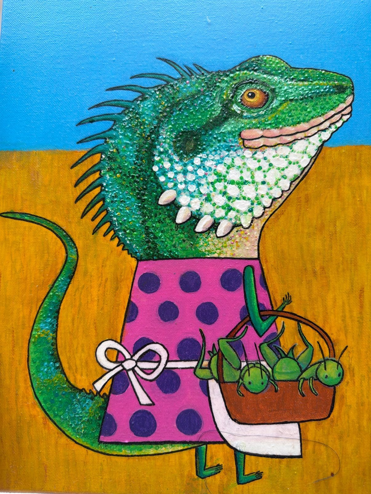
The turn
How a lizard holds its head.
The goal was to “create a 3d model of her that we can use in future projects.” A model needs references from many angles, and a painting has exactly one.
Image tools do not remember a character, and they default to a stiff front, side and three-quarter turnaround that no lizard stands in.
Even on a front view, it should be a little bit from above looking down, and the lizard isn’t looking straight directly ahead.
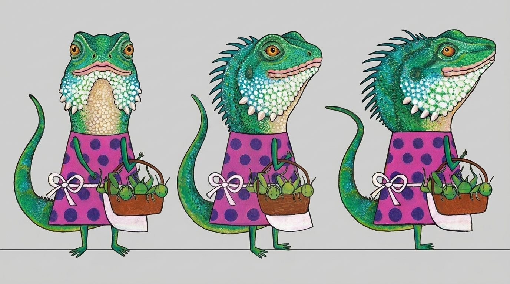
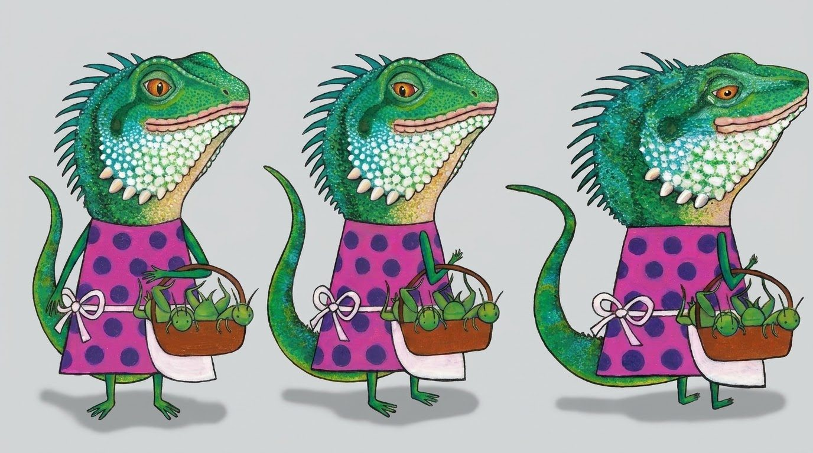
On model
One character, many states.
I briefed poses the way I would brief an illustrator, in plain words about what she is doing: “Raising up her arm with her elbow bent like she’s ready to grab a cricket from the ground.” Each kept panel became its own reference.
Expressions
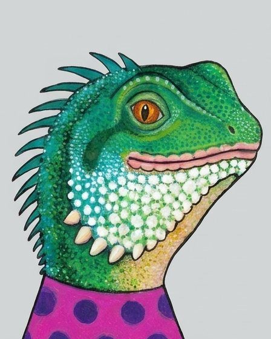
Calm 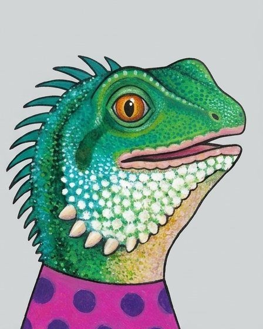
About to speak 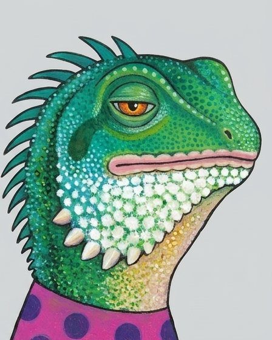
Unimpressed 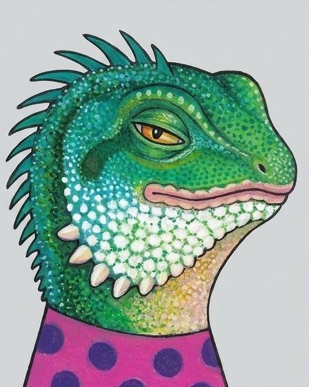
Skeptical 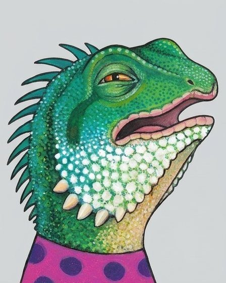
Mid-sentence 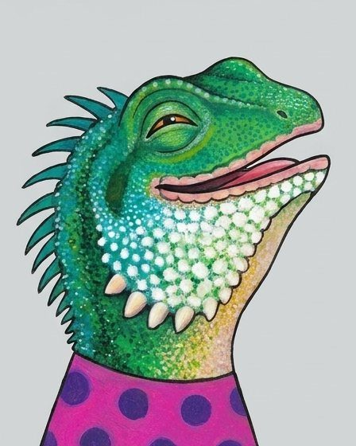
Giggling 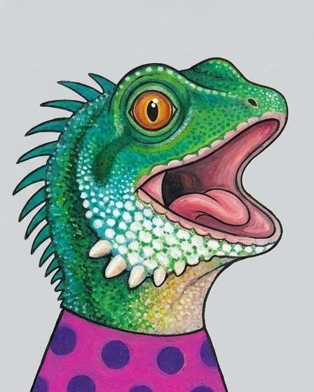
Laughing 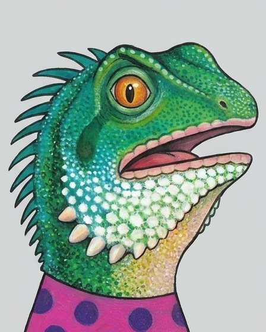
Curious 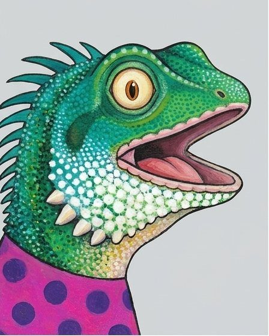
Startled 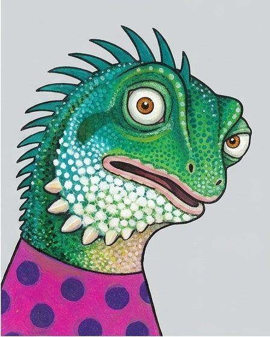
Aghast 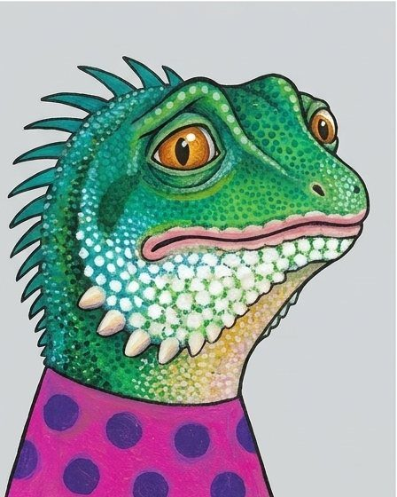
Worried 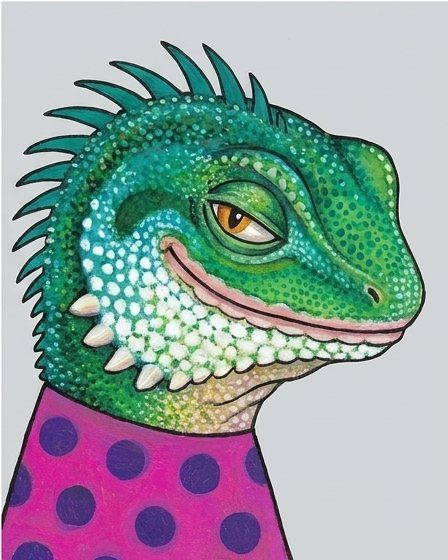
Sly
Poses
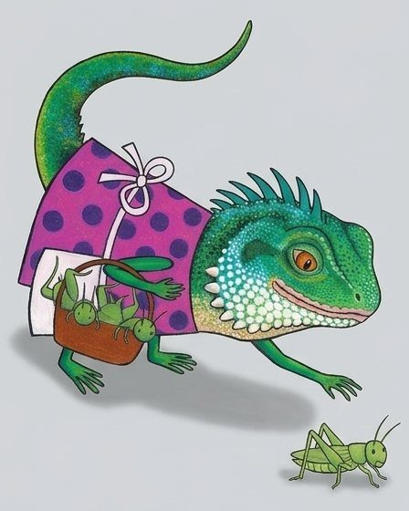
Stalking 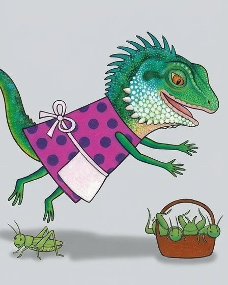
Pouncing 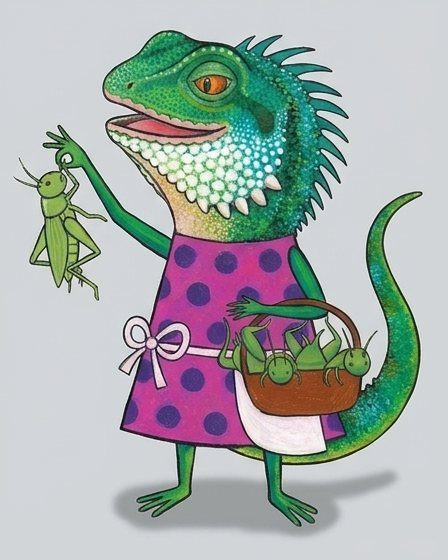
Triumph 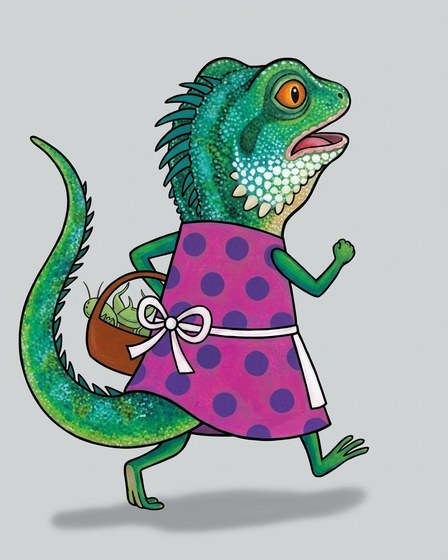
Striding 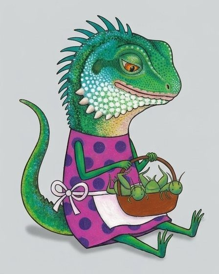
Basket in lap 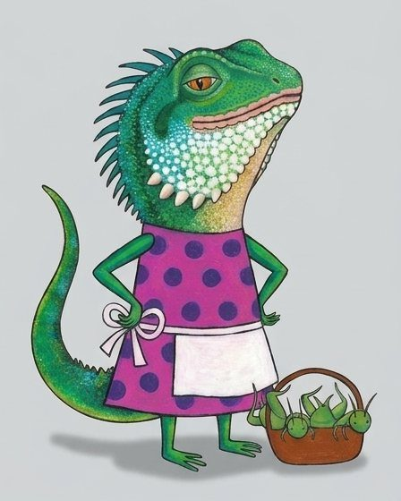
Hand on hip
The lock
Scales, not teeth.
Every defect I caught in review went into one paragraph, the character lock, that travels with every prompt. A new image starts from the same definition of her as the last one did.
The lock narrows the drift without ending it, and a few kept panels still show an extra finger.
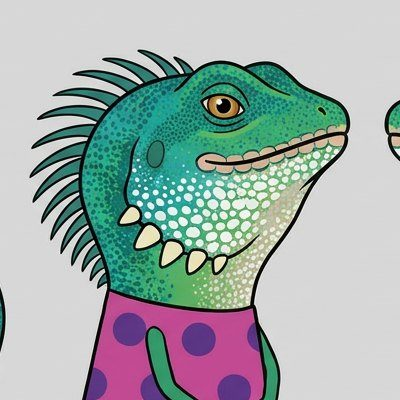
Caught: teeth
Lock: white stippled throat with flat cream spade-shaped scales under the jaw (scales, not teeth).
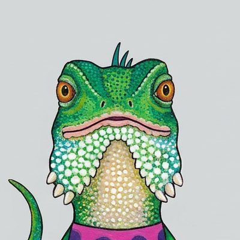
Caught: a human face
Lock: wedge-shaped head, orange-gold eye, thin pink lip line.
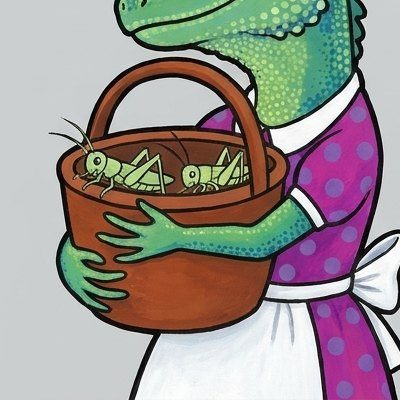
Caught: extra fingers
Lock: thin green arms with small three-fingered hands, small three-toed feet.
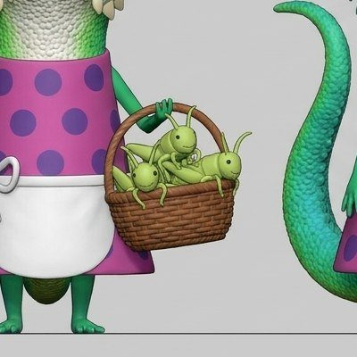
Caught: a woven basket
Lock: smooth rust-brown basket with a thin arched handle.
Her world
Her world, carved in ink.
I set her in four places she lives: a night field, a moonlit river, a village lane and a lamplit kitchen. The first pass painted them in an acrylic look.
Then I shared a hand-colored linocut print I own and said, “This style environment.” The scenes were redone with the style described in words, without the print’s subjects, so the scenes are new work.
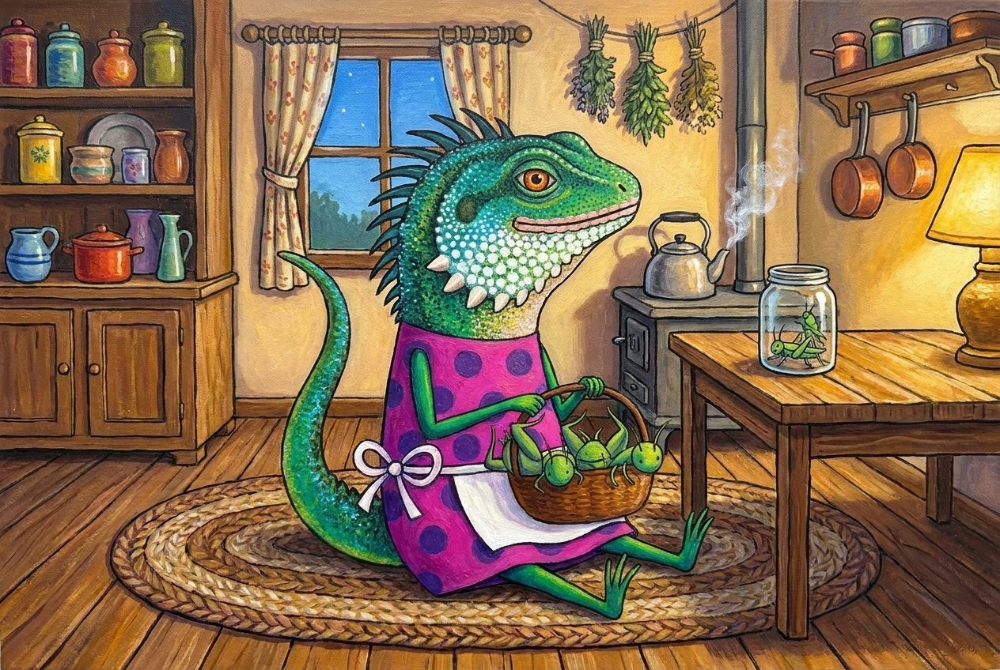
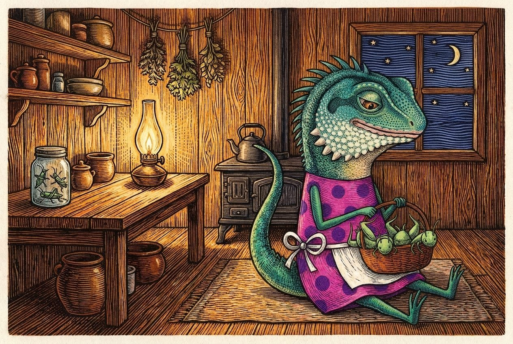
Those are great. Save that as the style.
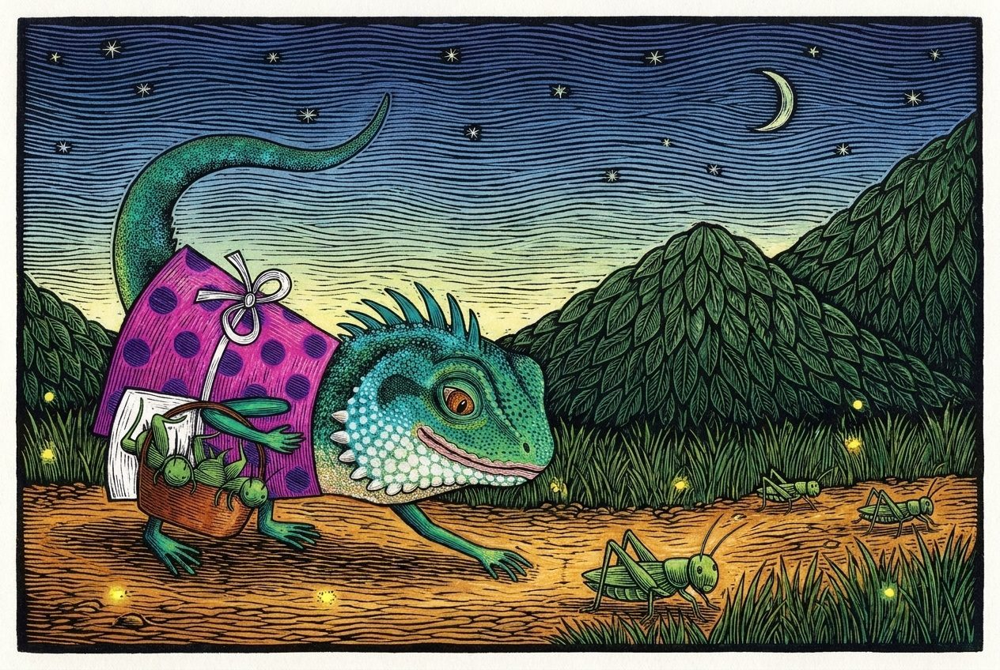
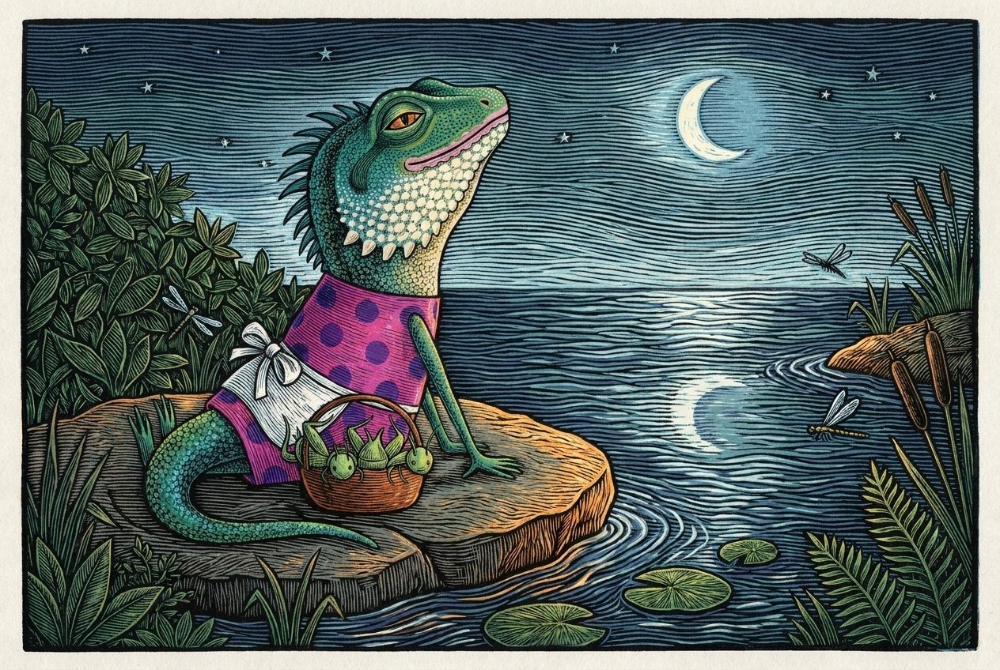
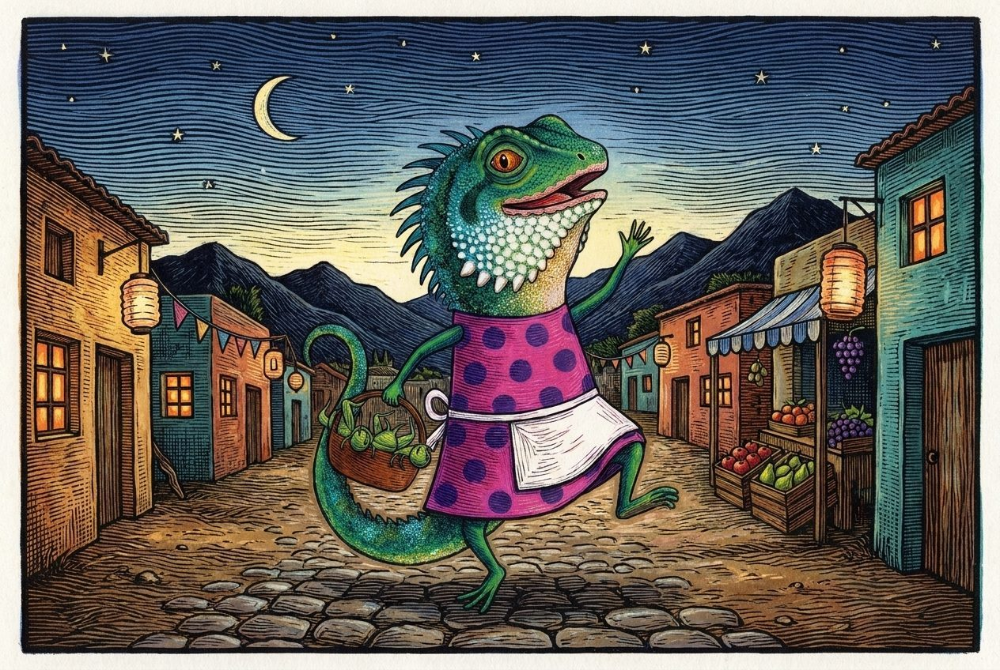
On model, ready to model.
The 3D model is the next step, and it starts from a set of references that all agree on who she is.